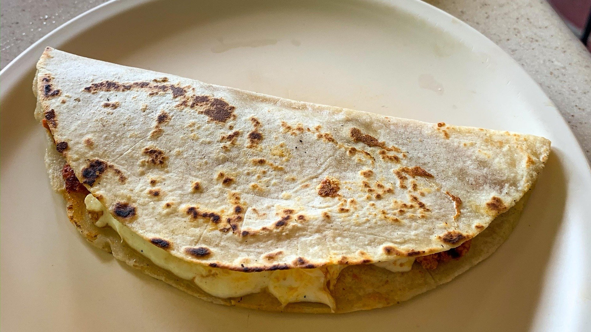

Quesadilla

A little pocket of heaven, the Quesadilla will having you wanting more!
The Quesadilla is a simple but tasty little snack. Simplicity at its finest!
You do not need fancy cookware to handle this recepie! Just a little bit of time and some self-control to not devour it as you make more!
The beauty of this dish is the versatillity that it brings to the table! Go with the plain pure cheese option for a classic taste.
But if you are feeling a little fiesty, go ahead and and some chicken and peppers! The simple cheese quesadilla is nothing more than a
blank canvas for your cullinary desires!
Follow the recepie below to make your own quesadilla!
Ingredients
- Tortillas
- The perfect carrying device for your quesadilla! Use flour tortillas for larger quesdaillas or corn tortillas for smaller ones.
- Cheese
- The star of the show! Not just any cheese will do though! Montery Jack Cheese is the best choice!
For something a little more authentic try one of the following:
- Oaxaca Cheese
- Queso Asadero
- Manchego
Cooking Tools
- Skillet or Non-Stick Frying Pan
- Something with a flat serface will do the trick! For an easier time using a non-stick frying pan is great!
- Spatula
- Best device to flip over your quesadillas!
- Cutting Board (Optional)
- Having a cutting board to help place your cheese on the tortilla helps out a lot. However, to keep this simple you could just use your plate!
- Plate
- To hold your delicious quesadillas!
The wonderful think about quesadillas is how simple and quick they are to make! Just follow the steps below!
Steps
- Preheat your pan of choice on medium heat.
- As the pan is preheating, prepare your quesadilla workstation. Have your tortillas near you and as well as your cheese.
- Once the pan is preheated place a tortilla on the pan for anywhere from 10-15 seconds on each side. This will warm up the torilla making it a little easier to work with.
- Take the tortilla off the pan and place it on the plate/cutting board for the cheese.
- Place the cheese on one half of the tortilla being careful not to overfill, but making sure there is enough. Then fold over the other side to make a half-circle.
If you are feeling brave you can place the cheese while the tortilla is in the pan.
- Place the quesadilla back in the pan (if you took the tortilla out). Let it slowly warm through, melting the cheese.
- As the cheese is melting, check the bottom of the tortilla to see if it is a nice golden brown. Flip to otherside once golden brown.
- Let the otherside get golden brown as well and the chese melted.
- Place on a plate and serve!
Tips
Here are some tips to help you make your best quesadilla!
- Try to watch how much cheese you put it the tortilla. The more you put, the longer it will take to melt and the more likely your tortilla will burn!
- Use a low flame! I know it might make more sense to use a higher flame, but you want to melt your cheese and toast your tortilla at the same time. Low flames help with this!
- Use a medium to large size pan to have more quesadillas warming up at the same time!
- Invest in a comal: a round flat griddle that is used a lot in mexican cooking.
A comal
like this one from Imusa is great!
Back to Top